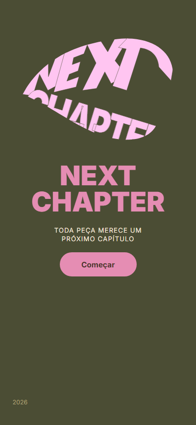
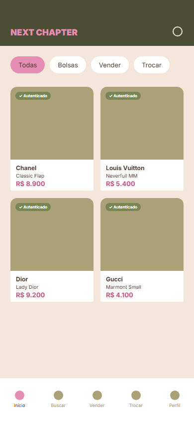
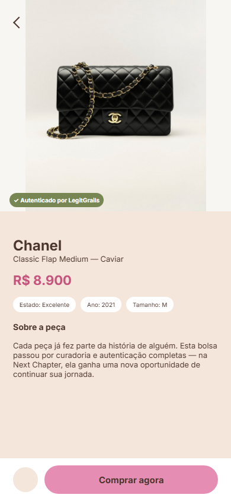
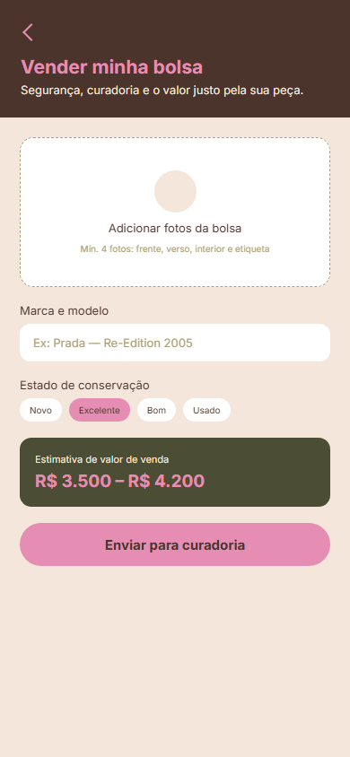
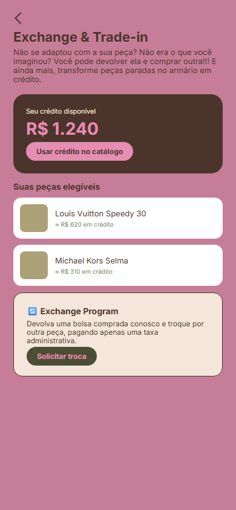
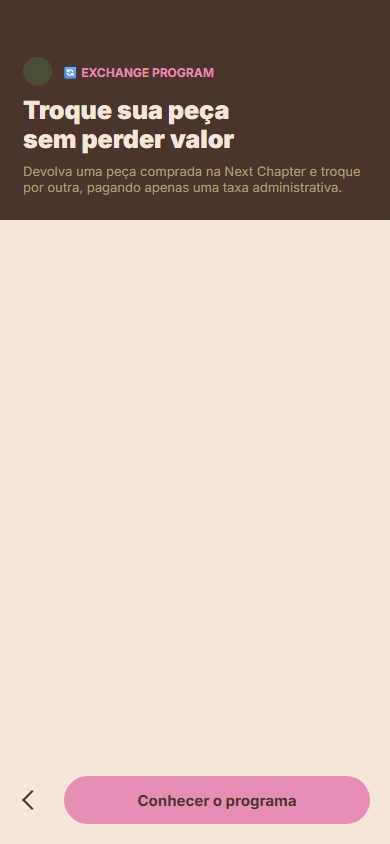
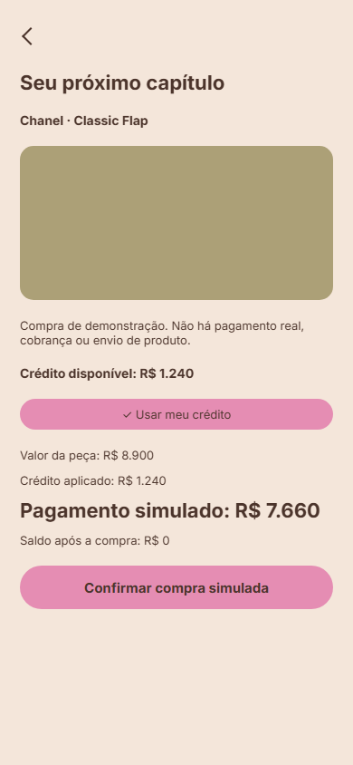
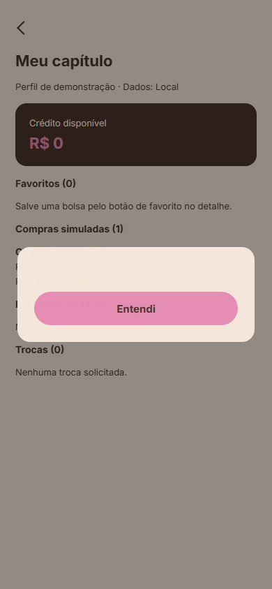

Execução real no Chromium / Windows, dados locais mockados. Capturas e vídeos dos testes Playwright, com capturas complementares de navegação. A integração Supabase foi verificada separadamente. Os prints manuais atualizados estão vinculados no README. O link do vídeo final ainda deve ser preenchido; consulte o checklist.







